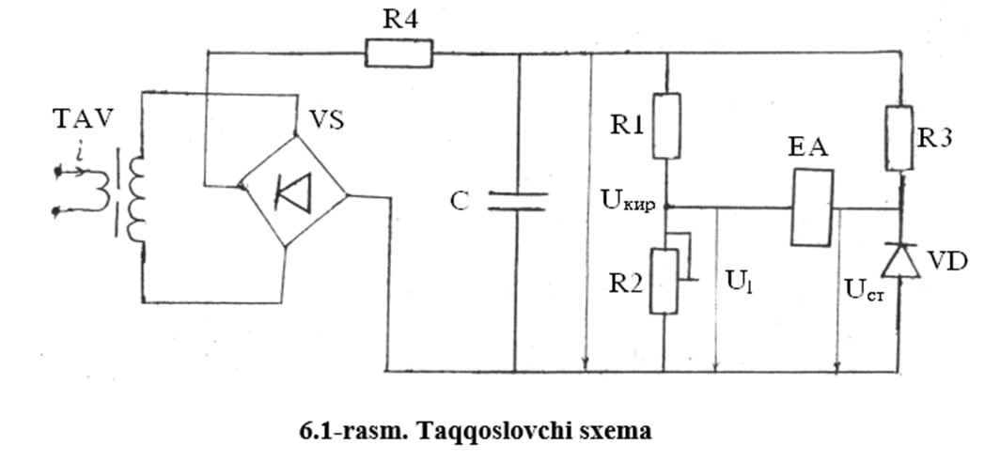

Mavzu: Rele himoyasi va aftomatikasi qurilmalarini ishlash prinsipi
Nazariy tushuncha:
O‘lchash transformatorlarining vazifalari qo‘yidagilar: rele himoyasining o‘lchovchi qismini va o‘lchash priborlarini yuqori kuchlanishli birlamchi zanjirdan golpvanik ajratish; nominal birlamchi kuchlanish va tokning qiymatidan qatoiy nazar standart ikkilamchi kuchlanish va tok hosil qilish....
O‘lchash organi (UO) o‘lchovchi relelardan tashkil topgan bo‘lib, himoya qilinadigan oboektni holatini uzluksiz nazorat qiladi va himoya qurilmalarini ishga tushish va tushmaslik shartini o‘lchash o‘zgartkichlaridan (masalan, tok va kuchlanish transformatorlaridan) keladigan signal orqali aniqlaydi...
Mantiqiy organ (MO) maolum bir shartni bajarish uchun UOdan olingan signalga asosan mantiqiy signal ishlab chiqadi va ijro organiga uzatadi;...
Elektr ta’minoti sistemalarida har xil turdagi maxsus elektr qurilmalar, jumladan kondensator batareyalari, elektr pechlari, o‘zgartiruvchi qurilmalar va boshqalar qo‘llaniladi. Xizmat qilishlari davomida ular ham elektr ta’minoti tizimining boshqa elementlari singari shikastlanishi mumkin...
Sinxron generatorlarning ishlash jarayonida stator yoki rotor cho‘lg‘amining shikastlanish va normal bo‘lmagan rejimlarning yuzaga kelishi mumkin. Sinxron generatorlar elektr tizimining asosiy elementlaridan biri bo‘lib hisoblanadi va ular ishonchli va effektiv rele himoyasi va avtomatik boshqarish qurilmalari bilan ta’minlanishi lozim. Sinxron generatorda fazalar orasida qisqa tutashuv, faza o‘ramlari oraligida qisqa tutashuv, bir fazani korpus orqali yerga tutashuv kabi shikastlanishlar yuzaga kelishi mumkin...
Batafsil malumotlar...
O‘lchash transformatorlarining vazifalari qo‘yidagilar: rele
himoyasining o‘lchovchi qismini va o‘lchash priborlarini yuqori
kuchlanishli birlamchi zanjirdan golpvanik ajratish; nominal
birlamchi kuchlanish va tokning qiymatidan qatoiy nazar standart
ikkilamchi kuchlanish va tok hosil qilish. Amaliyot natijalari
va ularning taxlili shuni ko‘rsatadiki rele himoyasi
qurilmalarini ta'minlovchi tok transformatorlarining xatoligi,
ularning birlamchi cho‘l'amidan o‘tish ehtimoli bo‘lgan maksimal
qisqa tutashuv toklari o‘tgan vaqtda ham, tok bo‘yicha 10% dan
va burchak bo‘yicha 7° dan katta bo‘lmasligi kerak. Tok
transformatorlari 0,5;1;3;10 va R aniqlik klasslarida
tayyorlanadi. Aniqlik klasslari rele himoyasini ta'minlovchi tok
transformatorlarini tanlash uchun asos bo‘lib xizmat qila
olmaydi. Chunki, ular ko‘rsatilgan aniqlik klassini birlamchi
tok va yuklama nominalgacha bo‘lganida ta'minlaydi. Maxsus rele
himoyasi uchun R aniqlik klassdagi tok transformatorlari
tayyorlanadi. Himoyalanayotgan oboektning yuklama toki,
kuchlanishi va rele himoyasining turiga asosan tok
transformatorlari tanlanadi. Katta birlamchi toklarda aniq
ishlashi talab qilinadigan himoyalar masalan, differensial
himoya uchun R aniqlik klassdagi tok transformatorlari va
nisbatan kichik birlamchi toklarda aniq ishlashi talab
qilinadigan himoyalar uchun 1,3 va 10 aniqlik klassiga ega
bo‘lgan tok transformatorlari tanlanadi.
Elektr stansiyalar va sistemalar quvvatining ortishi natijasida
qisqa tutashuv toklari va ularning davriy bo‘lmagan tashkil
etuvchilarning so‘nish vaqt doimiysining ortishi o‘tish jarayoni
vaqtida tok transformatorlarining to‘yinishi, birlamchi tok
transformatsiyasining buzilish va rele himoyasining noto‘g‘ri
ishlashiga olib kelishi mumkin. To‘yinishni kamaytirish uchun
transreaktorlardan, ya’ni magnit o‘zagida havoli oraliq bo‘lgan
transformatorlardan foydalanish mumkin. Transreaktorning
birlamchi cho‘lg‘ami xuddi tok transformatorlari singari
birlamchi tok zanjiriga ketma - ket ulanadi (1.1-rasm).
Transreaktorning ikkilamchi cho‘lg‘amiga katta yuklama
qarshiligi ulanadi, ya’ni transreaktor tok transformatorlaridan
farqli ravishda salt yurish rejimiga yaqin rejimda ishlaydi.
Ikkilamchi tok juda kichik bo‘lganligi sababli, F magnit oqimni
faqat birlamchi - cho‘lg‘amning magnitlovchi kuchi I W hosil
qiladi deb hisoblashimiz mumkin F = I W / Rm Transreaktorning
ikkilamchi cho‘lamida F1 oqim Ye2 E.Yu.K ni hosil qiladi e2=4,44
W1 F1m = K1 F1m=KI1. Induksiya konuniga asosan Ye2 vektor F1 va
I1 vektorlardan 90°ga fark qiladi, Kompleks shaklda Ye=-jkI1.
Havoli oraliq ning mavjudligi transreaktor magnit uzagi magnit
qarshiligi Rm ning katta bo‘lishiga va magnit oqim F1 ning
kamayishiga olib keladi. Natijada magnit uzakning tuyinishi
cheklanadi
Differensial himoya davriy bo‘lmagan toklar ta’sirida to‘g‘ri
ishlashi mumkin. Buning oldini olish uchun differensial rele tez
tuyinuvchi tok transformatori (TTT) orqali ulanadi. TTT ning
parametrlari davriy bo‘lmagan toklarni o‘tkazmaydigan va
sinusoidal (davriy) toklarni yaxshi o‘tkazadigan qilib
tanlanadi. TTT ning birlamchi cho‘lg‘amidan tok o‘tganda
(1.2-rasm, a) uning ikkilamchi cho‘lg‘amida induksiya konuniga
asosan Ye2 E.Yu.K. hosil bo‘ladi. E2=-dF/dt Davriy bo‘lmagan tok
Idb ta’sirida t vaqt ichida magnit oqimining o‘zgarishi Fdb
juda kichik bo‘ladi. (3-rasm, b), ya’ni E2=-dF/dt=0 Davriy
(sinusoidal) tok Id ta’sirida magnit oqimining o‘zgarishi
nisbatan katta, ya’ni davriy tok TTT orqali yaxshi
transformatsiyalanadi. Natijada TTT orqali ulangan differensial
himoya qisqatutashuv toki tarkibida davriy bo‘lmagan tashkil
etuvchilar bo‘lganda ishlamay turadi va ular so‘nib faqat davriy
tashkil etuvchilar qolganda to‘g‘ri ishlaydi.
Yarimo‘tkazgichli elementlar diodlar va tranzistorlar rele himoyasi va avtomatikaning ikkinchi avlodining yaratishga asos bo‘lib hizmat qilgan. Hozirgi vaqtda rele himoyasi va avtomatikada hisoblash texnikasining elementlari-yarimo‘tkazgichli integral mikrosxemalar (operatsion kuchaytirgichlar, komparatorlar, raqamli mantiqiy elementlar) keng qo‘llanilmoqda.
Integral mikrosxema murakkab yarimo‘tkazgichli qurilma bo‘lib hisoblanadi. Uning elementlari - diodlar, tranzistorlar, rezistorlar va kondensatorlar kichik o‘lchamdagi yarimo‘tkazgich materialda yoki uning yuzasida kristallni o‘stirish va plyonka hosil qilish yo‘li bilan tayyorlanadi.
Integral mikrosxemalar (IMS) analog va raqamliga bo‘linadi. Operatsion kuchaytirgichlar analog IMS bo‘lib RH va A ning o‘lchovchi organlarida ishlatish uchun katta imkoniyatlarga ega. Raqamli mikrosxemalar ikkilik yoki boshqa raqamli kodda ifodalanagan raqamli signallarni qayta ishlaydi. Ulardan RH va A ning mantiqiy qismini bajarishda foydalaniladi.
Yarimo‘tkazgichli va mikroelektronika elemenlaridan foydalanish RH va A ning tezkorligini va sezgirligini orttirish; massasi, o‘lchamlari va iste’mol qiladigan quvvatini kamaytirish imkonini beradi. Bundan tashqari ularda harakatlanuvchi qismlar va kontaktlar bo‘lmasligi sababli, elektromexanik elementlarga nisbatan yuqori ishonchlilikka ega.
Yarimo‘tkazgichli elemenlarning asosiy kamchiligi parametrlarining haroratga boliqligidir. Lekin bu kamchilikni element va sxemalarni o‘ziga xos bajarish yuli bilan bartaraf qilish mumkin.
2. Yarimo‘tkazgichli elementlar
Yarimo‘tkazgichli elementlar yordamida rele himoyasi va avtomatikaning asosan o‘lchovchi va mantiqiy qismlari tayyorlanadi.
Misol tariqasida bitta kattalikning absolyut qiymatini berilgan qiymat bilan solishtiruvchi sxemani ko‘raylik (6.1-rasm). Sxemaning kirishiga beriladigan tok transreaktor TAV yordamida tokka proporsional kuchlanishga aylantiriladi va VS to‘g‘rilagich yordamida to‘g‘rilanadi hamda R4 rezistor va S kondensatordan tashkil topgan RS filtr yordamida tekislanadi. Hosil qilingan Ukir kuchlanish R1 rezistor va R2 o‘zgaruvchan qarshilikdan tuzilgan, bo‘lgich yordamida U1 qiymatgacha o‘zgartiriladi. Sxemada berilgan qiymat sifatida stabilitron VD dagi o‘zgarmas stabillashtirilgan Ust kuchlanidan foydalaniladi va U1 kuchlanish.
U1 = Ukir R2/ (R1 + R2)
Sxemada R3 rezistor VD stabilitronning stabilizatsiya rejimini hosil qilish uchun xizmat qiladi. Agar U1> Ust bo‘lsa nol - indikator YeA ishlaydi, ya’ni sxemaning (relening) ishga tushish kuchlanishi
Uri = (R1 + R2) Ust/R2.
Nol indikator (YeA) sifatida magnitoelektrik relelardan yoki tranzistorli nol - indikatorlardan foydalanish mumkin. Nol - indikator tokning faqat ma’lum yo‘nalishda ishlaydi, masalan yuqoridagi sxemada tok chapdan o‘ngga yo‘nalganda.

6.1-rasmda ko‘satilgan sxemadan tok relesi sifatida foydalanish mumkin. Relening ishga tushish toki, ya’ni o‘rnatmasi R2 o‘zgaruvchan qarshilik yordamida o‘zgartiriladi. Ushbu sxemadan kuchlanish relesi sifatida foydalanilganda TAV transreaktor o‘rniga oraliq kuchlanish transformatoridan foydalaniladi.
3. Mikroelektron elementlar
Rele himoyasi va avtomatikaning o‘lchovchi qismida mikroelektronika elementlaridan asosan operatsion kuchaytirgichlar ishlatiladi. Operatsion kuchaytirgichlar (OK) murakkab yarimo‘tkazgich qurilma bo‘lib uning tarkibida o‘nlab tranzistorlar bo‘ladi. OK ikki qutbli ta’minlash manbasiga ulanadi.
OK ikkita kirish va bitta chiqishga ega. Kirishlaridan biri invertorlaydigan va ikkinchisi invertorlamaydigan kirish deyiladi. Birinchisi “ - “ belgi bilan ikkinchisi “ + “ belgi bilan belgilanadi. (6.2- rasm, a). Invertirlovchi kirishga berilgan signalnnig chiqishda ishorasi o‘zgaradi. Invertirlamaydigan kirishga berilgan signalning esa chiqishda ishorasi o‘zgarmaydi.
6.2-rams Operatsion kuchaytirgich va uning ulanish sxemalari
OK juda katta kuchaytirish koeffitsiyenti (K=103...106), kirish qarshiligi (Rkir = 103-106 Om), nisbatan kichik chiqish qarshiligi (o‘nlab yoki yuzlab Om), juda kichik kirish toki (Ikir = 10-6...10-7 A) ga ega.
OK invertirlovchi kuchaytirgich rejimida ishlaganda (6.2- rasm, b) uning kuchaytirish koeffitsiyenti K=-R2/R1 ga teng. Uning kirishiga bir nechta kuchlanish berish mumkin, ya’ni undan har-xil relelar hamda simetrik tashkil etuvchilarning filtrrlarini tayyorlashda foydalanish mumkin.
Invertirlamaydigan OK (6.2-rasm, v) juda katta kirish qarshiligiga ega. Uninig kuchaytirish koeffitsiyenti
K=1+R2/R1.
Differensial kuchaytirgich (6.2-rasm, g) ning chiqishidagi kuchlanish Uchiq= (Ukir1 - Ukir2) K ga teng.
Komparator (6.2-rasm, d) manfiy teskari bog‘lanishga ega emas va kirishlariga bir xil ishorali kuchlanishlar berilsa, kalit rejimda ishlaydi. Masalan kirishdagi kuchlanishlar musbat bo‘lib, Ukir2 > Ukir1 bo‘lsa chiqishda maksimal musbat kuchlanish va Ukir2 "<"Ukir1 bo‘lsa minimal manfiy kuchlanish hosil bo‘ladi. Sxema turg‘un ishlashi uchun R3 rezistor orqali musbat teskari bog‘lanish kiritiladi. Bunda sxema gistrezis xarakteristikaga ega bo‘lgan (6.2-rasm, ye) Shmitt triggeriga aylanadi. Agar sxemada R2 va R3 rezistorlar bo‘lmasdan “+” kirish massaga ulansa sxema nol-indikatorga aylanadi.
Rele himoyasi va avtomatika qurilmalari shikastlanish yoki
normal bo‘lmagan rejimlarning xarakterli belgilaridan foydalanib
bajariladi. Masalan qisqa tutashuvning xarakterli belgilari
tokning ortishi va kuchlanishning pasayishidir. Shikastlangan
elementni aniqlash usuli bo‘yicha himoyalar nisbiy va absolyut
tanlashga ega bo‘lgan himoyalarga bo‘linadi. Nisbiy tanlashga
ega bo‘lgan himoyalarga tok, yo‘naltirilgan tok va masofa
himoyalari kiradi. Tokning o‘zgarishidan ta’sirlanib ishlaydigan
himoyaga tok himoyasi deb ataladi. Shikastlanish vaqtidagi
tokning yo‘nalishiga asosan ishlaydigan himoyaga yo‘naltirilgan
tok himoyasi deb ataladi. Kuchlanish va tokning nisbatiga asosan
ishlaydigan himoyaga masofa himoyasi deb ataladi. Kuchlanish
o‘zgarishiga asosan ishlaydigan himoyaga kuchlanish himoyasi
deyiladi. Asolyut tanlashga ega bo‘lgan himoyalar
himoyalanayotgan oboektning kirishi va chiqishidagi (boshlanishi
va so‘nggidagi) bir xil elektr kattaliklarini taqqoslashga
asoslangan. Ularga ko‘ndalang va bo‘ylama differensial himoyalar
kiradi. Avtomatik chastotaviy yengillashtirish qurilmasi (AChYe)
chastota o‘zgarishiga asosan ishlaydi. AChYe qurilmasi uchun
kirish signali bo‘lib, asosan chastotaga proporsional kuchlanish
hisoblanadi. Avtomatik qayta ulash (AQU) va rezervni avtomatik
ulash (RAU) qurilmalarining kirishlariga diskret signallar
beriladi. Bu signallar rele himoyasining ishlaganligi va
viklyuchatellarning holati to‘g‘risidagi informatsiyaga ega
bo‘ladi. Himoya qurilmalarini bajarishning prinsiplari
xilma-xildir. Lekin, ko‘pchilik hollarda ular avtonom bo‘ladi va
himoyalanayotgan elementning tok va (yoki) kuchlanishlaridan
foydalaniladigan qilib bajariladi.
Umuman olganda himoyaning funksional sxemasi (K-3-rasm) quyidagi
organlardan tashkil topgan bo‘ladi: • o‘lchash organi (UO)
o‘lchovchi relelardan tashkil topgan bo‘lib, himoya qilinadigan
ob’ektni holatini uzluksiz nazorat qiladi va himoya
qurilmalarini ishga tushish va tushmaslik shartini o‘lchash
o‘zgartkichlaridan (masalan, tok va kuchlanish
transformatorlaridan) keladigan signal orqali aniqlaydi;
• mantiqiy organ (MO) ma’lum bir shartni bajarish uchun UOdan
olingan signalga asosan mantiqiy signal ishlab chiqadi va ijro
organiga uzatadi;
• ijro organi (IO) mantiqiy organ signali asosida himoya
qilinadigan ob’ektni boshqarish signalini ishlab chiqadi va uni
kommutatsiya apparatiga, masalan vыklyuchatelga uzatadi;
• signal beruvchi organ. Signal beruvchi organga axborot MO va
IO laridan kelishi mumkin. Ushbu organ normal bo‘lmagan rejimlar
yuzaga kelganligi to‘g‘risida yoki himoya komplekti yoki uning
ayrim qismlari ishlaganligi to‘g‘risida signal beradi; br •
ta’minlash manbasi himoyalarning mantiqiy organlarini va
o‘lchash organlarini ham (masalan, yarim o‘tkazgichli
elementlardan foydalanib bajarilgan himoyalarda) tok bilan
ta’minlash uchun hizmat qiladi. Ular ko‘pchilik hollarda
ta’minlash bloklari ko‘rinishida tayyorlanadi va operativ tok
manbasi bo‘lib hisoblanadi.
2 - Rele himoyasi va avtomatika sxemalarida ishlatiladigan shartli belgilar
Rele himoyasi va avtomatika sxemalarida quyidagi shartli belgilar ishlatiladi: a - rele va kontaktorlarning cho‘lg‘amlari: 1-bir cho‘lg‘amli; 2-ikki cho‘lg‘amli; 3-tok relesi; 4-ishlash jarayonida hayallash vaqtiga ega bo‘lgan vaqt relesi;
1. Kondensator qurilmalarining rele himoyasi va avtomatikasi
Elektr ta’minoti sistemalarida har xil turdagi maxsus elektr qurilmalar, jumladan kondensator batareyalari, elektr pechlari, o‘zgartiruvchi qurilmalar va boshqalar qo‘llaniladi. Xizmat qilishlari davomida ular ham elektr ta’minoti tizimining boshqa elementlari singari shikastlanishi mumkin. Ular uchun katta toklar hosil bo‘laigan normal bo‘lmagan rejimlar ham havfli. Shuning uchun maxsus elektr qurilmalar ham shikastlanishlar va normal bo‘lmagan rejimlardan himoyalarga ega bo‘lishi kerak. Bundan tashqari ularda avtomatika qurilmalari ham qo‘llaniladi.
Kondensator qurilmalari quvvat koeffitsiyentini ko‘tarish va kuchlanishni mahalliy o‘zgartirish uchun ishlatiladi. Ular kuchlanishni o‘zgartirish qurilmasiga ega bo‘ladi. Kondensator qurilmalarida asosiy shikastlanish turi ikki fazali qisqa tutashuvga olib keluvchi kondensatorlar izolyatsiyasining ishdan chiqishidir.
Normal bo‘lmagan rejimlarga yuqori garmonikalar ta’sirida kondensatorlarning o‘ta yuklanish kuchlanishning ortib ketishi va yerga tutashuv kiradi.
1.Qisqa tutashuvdan himoya. Kuchlanish 1 kVt gacha bo‘lgan elektr tarmoqlarida eruvchan saqlagichlar yoki avtomatik vыklyuchatellar yordamida bajariladi. Kuchlanish 1 kVt dan yuqori elektr tarmoqlarida kondensator qurilmalari qisqa tutashuvdan eruvchan saqlagichlar yoki ikki fazali tok otsechkasi yordamida himoya qilinadi.
Kondensator qurilmasining ikki fazali bir releli tok otsechkasi yordamida himoyalanganda quyidagicha hisoblanadi. Agar himoya RT-80 tipidagi rele yordamida bajarilgan bo‘lsa quyidagicha hisoblanadi:
Rele elektromagnit elementining ishga tushish toki
bu yerda K3=22,5 – zahira koeffitsiyenti, Ksx – sxema koeffitsiyenti, Ixi – himoyaning ishga tushish toki, KI – tok transformatorining transformatsiya koeffitsiyenti, Inom.k – kondensator qurilmasining nominal toki, Q – kondensator qurilmasining reaktiv quvvati, U- kondensator qurilmasining nominal kuchlanishi.
Himoyaning sezgirligi
Bu yerda Ik.min – kondensator qurilmasi ulangan nuqtadagi minimal qisqa tutashuv toki.
2. O’ta yuklanishdan himoyani bajarish uchun RT-80 relening induksion elementidan foydalaniladi
Sinxron generatorlarning ishlash jarayonida stator yoki rotor
cho‘lg‘amining shikastlanish va normal bo‘lmagan rejimlarning
yuzaga kelishi mumkin. Sinxron generatorlar elektr tizimining
asosiy elementlaridan biri bo‘lib hisoblanadi va ular ishonchli
va effektiv rele himoyasi va avtomatik boshqarish qurilmalari
bilan ta’minlanishi lozim. Sinxron generatorda fazalar orasida
qisqa tutashuv, faza o‘ramlari oraligida qisqa tutashuv, bir
fazani korpus orqali yerga tutashuv kabi shikastlanishlar yuzaga
kelishi mumkin. Fazalar oraligida qisqa tutashuv vaqtida
generator cho‘lg‘amlardan katta toklar o‘tishi natijasida
izolyatsiya va statorning magnit o‘zagida qayta tiklanishi qiyin
bo‘lgan shikastlanishlar hosil bo‘lishi mumkin. O’ta yuklanish
va kuchlanishning ortib ketishi kabi normal bo‘lmagan rejimlar
ham generator uchun havfli. Tashqi qisqa tutashuvlar vaqtida ham
generatorning stator cho‘lg‘amidan katta qisqa tutashuv toklari
o‘tishi mumkin. Tashqi qisqa tutashuv nuqtasi uzilgandan keyin
yoki boshqa sabablar bilan yuklama keskin kamayganda
kuchlanishning ortib ketishi va rotor tezligining sinxron
tezlikka nisbatan o‘zgarishi mumkin. Bir fazali yerga tutashish
tokining qiymati 5 A dan kichik bo‘lsa himoya signalga, aks
holda generatorni uzishga ishlashi kerak. Generatorlarda
shikastlanishlar stator cho‘lg‘amidan tashqari, rotor
(qo‘zg‘atish) cho‘lg‘amida ham kuzatilishi mumkin. Rotor
cho‘lg‘ami yer bilan izolyatsiyalangan. Shuning uchun uchun
bitta nuqtada yer bilan tutashish toki generator ish rejimiga
ta’sir qilmasligi mumkin, Lekin ikki nuqtada korpus orqali yer
bilan tutashish rotor cho‘lg‘amida o‘ramlar oralig‘ida qisqa
tutashuvga olib keladi. Bu shikastlanish rotor cho‘lami
izolyatsiyasini yemirilishiga, magnit maydoni simmetrikligining
buzilishiga va vibratsiyaga sabab bo‘ladi. Sinxron
generatorlarga o‘rnatilgan himoya shikastlanish yoki normal
bo‘lmagan ish rejimi yuz berganda signal rejimida ishlash kerak
va avtomatik rostlash orqali shikastlanish yoki normal bo‘lmagan
ish rejimining oldini olish imkoni bo‘lmaganda generatorni uzish
rejimida ishlashi kerak. Generatorni uzish uchun moslangan
himoya generatorni tashqi iste’molchi bilan bog‘lovchi tarmoqdan
uzishi, rotorga (qo‘zg‘atish cho‘lg‘amiga) tok berishni
to‘xtatishi va magnit maydonini so‘ndirish qurilmasini ishga
tushirishi kerak. Generatorlarning stator cho‘lg‘amlarida
fazalar oralig‘idagi qisqa tutashuv toklaridan himoyalash uchun
tez ishlovchi bo‘ylama differensial himoyalar qo‘llaniladi.
Stator cho‘lg‘amining shikastlanish turlari quyidagilar: a -
ko‘p fazali qisqa tutashuvlar; b- bir fazali yerga tutashuv; v -
bir faza o‘ramlari orasidagi tutashuv. Rotor cho‘lg‘amining
shikastlanishiga asosan uning bir yoki ikki nuqtada yerga
tutashuvi kiradi. Sinxron generatorlarning asosiy normal
bo‘lmagan rejimlari: a - simmetrik o‘ta yuklanish; b - simmetrik
bo‘lmagan o‘ta yuklanish; v - tashqi qisqa tutashuv; g -
kuchlanishning ortib ketishi; d - asinxron rejim; ye - rotor
cho‘lg‘amining qo‘zgatish toki bilan o‘ta yuklanishi. Ko‘p
fazali qisqa tutashuvlar xavfli bo‘lganligi sababli, ulardan
himoya generatorni uzishga ishlaydi. Yerga tutashuvdan himoya
yerga tutashuv toki 5 A gacha bo‘lsa signalga, 5 A yoki undan
katta bo‘lsa, generatorni uzishga ishlashi kerak. Generatorni
uzishga ishlovchi himoyalar vыklyuchatelni uzish bilan
birgalikda qo‘z-atish tokini uzishga, ya’ni maydon so‘ndiruvchi
avtomatni uzishga ham ishlashi kerak.
2. Kuchlanishi 1000 V ga bo‘lgan generatorlarning rele himoyasi
Kuchlanishi 1000 V gacha bo‘lgan generatorlarning neytrali yerga ulanadi. Bir fazali yerga qisqa tutashuvdan himoya generatorlarni uzishga ishlaydi. Quvvati 150 kVt va undan kichik generatorlarning qisqa tutashuvlardan himoyasini eruvchan saqlagichlar yordamida bajarish mumkin.
Quvvati 1 mVt gacha bo‘lgan generatorlarni hamma turdagi shikastlanishlar va normal bo‘lmagan rejimlardan avtomatik vыklyuchatellar yoki kommutatsiya apparatlari, masalan kontaktorlar mavjud bo‘lsa, MTH yordamida himoya qilishga ruxsat beriladi.
Boshqa generatorlar bilan yoki energosistema bilan parallel ishlaydigan generatorlarning yig‘ma shinalarga chiqish tomoniga hayallash vaqtiga ega bo‘lmagan tok otsechkasini o‘rnatish maqsadga muvofiq hisoblanadi
3. Kuchlanish 1000 v dan yuqori generatorlarning himoyasi
Kuchlanish 1000 V dan yuqori, quvvati 1 mVt gacha bo‘lgan generatorlar uchun ko‘p fazali qisqa tutashuvlardan, generatorning yig‘ma shinalar tomonga chiqishlariga tok otsechkasi o‘rnatiladi. Tok otsechkasining sezgirligi 2 dan kichik bo‘lsa, bo‘ylama differensial himoya qo‘llaniladi. Quvvati kichik yakka ishlaydigan generatorlar uchun neytral tomonga o‘rnatiladigan MTH dan foydalanishga ruhsat beriladi. Agar generator fazalarining neytral tomonda chiqishlari bo‘lmasa, ko‘p fazali qisqa tutashuvlarda minimal kuchlanish himoyasidan foydalanish mumkin.
Quvvati 1 mVt dan katta generatorlar uchun ko‘p fazali qisqa tutashuvlardan asosiy himoya bo‘lib bo‘ylama differensial himoya hisoblanadi, uning sxemasi 13.1 - rasmda keltirilgan. Himoya RT- 40 turdagi relelar (KA1 va KA2) yordamida bajarilgan. Hobalans toklarini kamaytirish uchun ular 5...10 Om ga teng bo‘lgan KR1 va KR2 qarshiliklar orqali ulanadi.